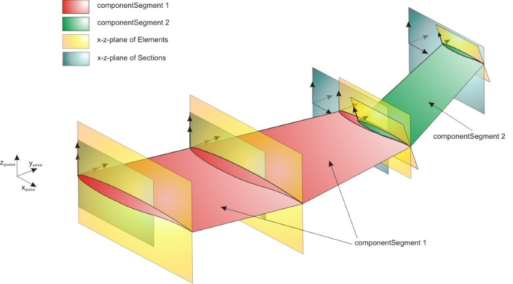
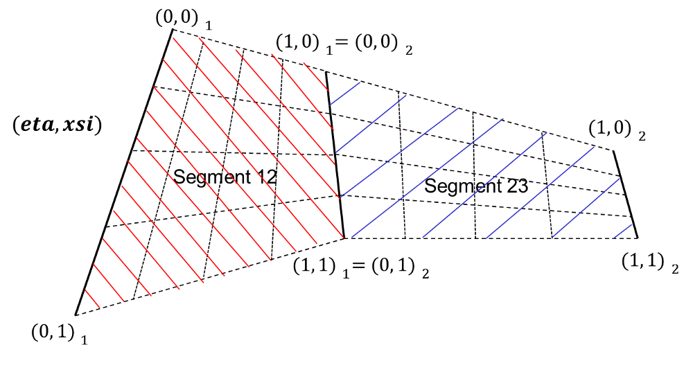
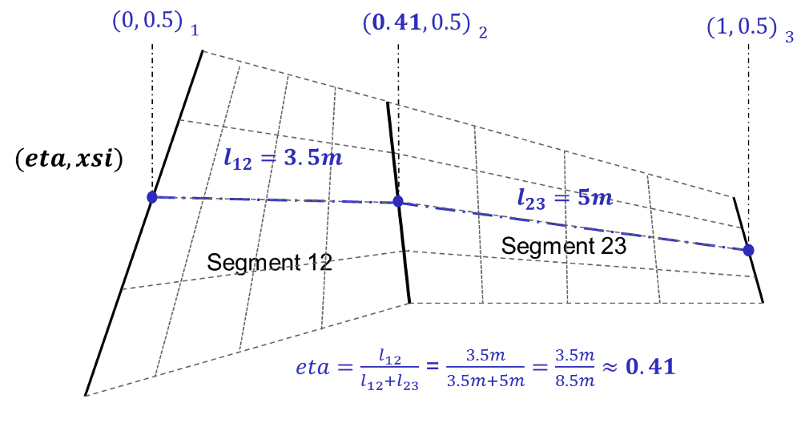
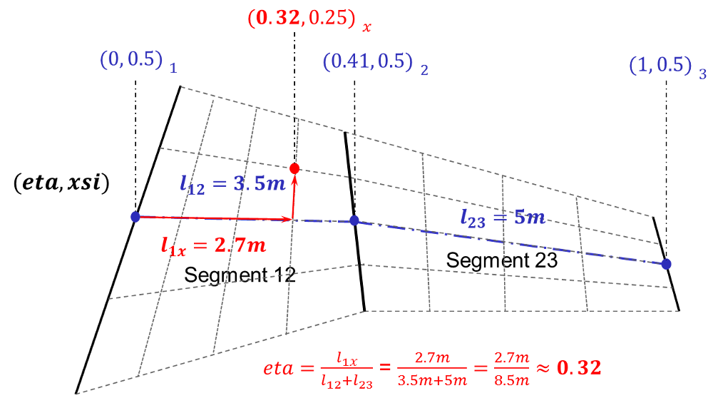

complexType · extension complexBaseType · all
ComponentSegment of the wing.
Within componentSegments the wing structure, the control surfaces, the wing fuel tanks and the wingFuselageAttachment is defined by using relative coordinates.
A componentSegment is defined in the same way as segments: from one cross section (sections->elements) to another. Compared to segments one componentSegment can can start and end at elements that are not consecutive. Therefore that one componentSegment can be the combination of several segments. Each wing has at least one componentSegment (from root to tip). The maximal number of componentSegments equals the number of segments (each segment is defined as one componentSegment). This also implies that each segment can only be part of one componentSegment.
In principal a componentSegment can combine any number of segments. But if in one section two elements are defined, the componentSegment has to start/end there as no well-defined relative coordinates can be defined if steps in the wing occur.
An example for wing componentSegments can be found in the picture below:

Within componentSegments a relative spanwise coordinate (eta) and a relative chordwise coordinate (xsi) is defined. Those coordinates are used for the definition of e.g. wing structures and control surfaces. there are two types of eta xsi coordinates. Segment (eta, xsi) coordinates define the relative local coordinate system for a segment ranging from (0,0) to (1,1).

The eta xsi coordinates for a component segment are based on the segment eta xsi planes. As a reference length for the component segment eta coordinate the mid chord lines of all the segments are used. The beginning of this line at from-element equals eta = 0, while the end of this line at the to-element equals eta = 1. All wing positions that lie on the same element (segment border) have the same eta coordinate. The points in between two elements are defined by the iso xsi lines of the segment eta xsi space. An example for the definition of the relative axes can be found in the picture below:

In order to calculate the global coordinates of a component segment eta xsi point one first has to calculate the eta point on the xsi iso line of (xsi=0.5), and then walk along the iso eta lineof the segment.
An example for determining the a component eta xsi point can be found in the picture below:

| Name | Type | Constraints | Use | Default | Description |
|---|---|---|---|---|---|
@externalDataDirectory | xsd:string | optional | Directory of the external data file | ||
@externalDataNodePath | xsd:string | optional | Path of the node inside the external data file | ||
@externalFileName | xsd:string | optional | Name of the external data file | ||
@uID | xsd:ID | required | UID |
| Name | Type | Constraints | OccurrenceHow often the element may appear at this place. The schema writes it as minOccurs and maxOccurs on the declaration. | Default | Description |
|---|---|---|---|---|---|
| allThe children below may appear in any order. Each may appear at most once. | |||||
name | stringBaseType | [1..1] required | Name | ||
description | stringBaseType | [0..1] optional | Description | ||
fromElementUID | stringUIDBaseType | [1..1] required | Reference to the element from which the componentSegment shall start | ||
toElementUID | stringUIDBaseType | [1..1] required | Reference to the element from which the componentSegment shall end | ||
structure | wingComponentSegmentStructureType | [0..1] optional | Structural layout | ||
controlSurfaces | controlSurfacesType | [0..1] optional | Control surfaces | ||
path | componentSegmentPathType | [0..1] optional | Deflection path of componentSegments (e.g. used for trimmable HTPs) | ||
wingFuselageAttachments | wingFuselageAttachmentsType | [0..1] optional | Attachments between the componentSegment and a fuselage | ||
wingWingAttachments | wingWingAttachmentsType | [0..1] optional | Attachments between the componentSegment and another wing | ||
wingFuelTanks | wingFuelTanksType | [0..1] optional | Fuel tanks | ||
wingStructuralMounts | wingStructuralMountsType | [0..1] optional | Structural mounts | ||
cpacs/vehicles/aircraft/model/wings/wing/componentSegments/componentSegmentcpacs/vehicles/rotorcraft/model/wings/wing/componentSegments/componentSegmentcpacs/vehicles/rotorcraft/model/rotorBlades/rotorBlade/componentSegments/componentSegment| Type | Name |
|---|---|
componentSegmentsType | componentSegment |